XC-CACHE: Cross-Attending to Cached Context for Efficient LLM Inference #
Submitted on 23 Apr 2024 by João Monteiro1, Étienne Marcotte1,, Pierre-André Noël1,, Valentina Zantedeschi1,*, David Vázquez1, Nicolas Chapados1, 2, Christopher Pal1, 2, Perouz Taslakian11, ServiceNow Research. Posted by HyunDong Kim, Sangil Han
Background Knowledge #
In-context Learning(ICL) #
In-context Learning (ICL) is a technique frequently used with Large Language Models (LLMs), such as GPT-3. This technique leverages the knowledge acquired during the pre-training phase, enabling the model to understand and apply new contextual information effectively. ICL allows the model to perform specific tasks efficiently without requiring additional training or fine-tuning.
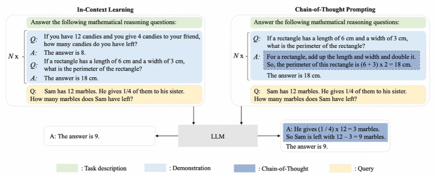
Fig. 1 A comparative illustration of ICL and CoT prompting
However, just-in-time processing of context is inefficient due to the quadratic cost of self-attention operations, making caching desirable. Yet, caching transformer states can demand nearly as much space as the model parameters themselves, posing a challenge when the appropriate context is not known in advance.
LLM #
LLM(Large language model) is a technology that understands and creates language-like text from vast amounts of data For example, Translation, Fixing typos, question-answer, summary, …
- Emergent abilities of LLM “the ability that are not present in small but arise in large models”
- J.Wei et al,, “Emergent abilities of large language models,” ⇒ Large Language Models that can be performed on unlearned tasks
“Emergence is when quantitative changes in a system result in qualitative changes in behavior.”
- “More is Different” by Nobel prize-winning physicist Phulip Anderson
NLP vs LLM NLP (Natural Language Processing)
- Covers general language analysis LLM (Large-Language Model)
- Subset of NLP
- Based on “Large” dataset
Caching #
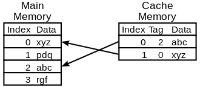
Fig. 2 The way of Caching
Advantages of caching include faster access to frequently used data, efficient resource use by reducing redundant computations, and improved service availability during network issues. However, challenges include maintaining data consistency and the need for additional memory.
Common uses of caching are web page caching for faster loading, database query caching to reduce load and response times, and API caching to decrease the number of API calls and improve performance. Caching is vital for enhancing performance in large-scale and data-intensive applications.
Transformer #
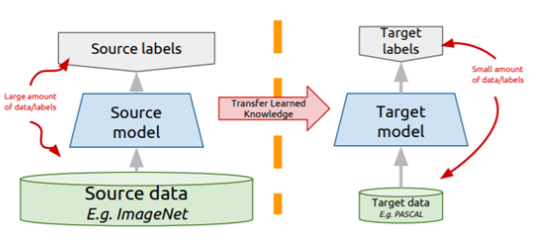
Fig. 3 Procedure of learning in Transfrer model
Self-Attention #
Finding the relationship between a sentence and a sentence. In other words, looking at the relationship between words and words within a sentence.
- Attention
The basic idea of attention is to once again refer to the entire input sentence in the encoder at each time step at which the decoder predicts the output word. However, rather than considering all input words in the same proportion, we will focus more on the input word part related to the word to be predicted at that point.
The attention function is usually expressed as follows
Attention(Q, K, V) = Attention Value
The attention function individually calculates the similarity with all keys for a given query and reflects these similarities in each value associated with that key. Then, all of the ‘Values’ reflecting this similarity are summed and returned.
These results are called Attention Value. Q: Concealed states in decoder cells at all time points K: Silver states of encoder cells at all time points V: Concealed states of encoder cells at all time points
Self-attention means that Q, K, and V are all the same. In the transformer, three attention types are used: Encoder Self-attention, Masked Decoder Self-attention, and Encoder-Decoder Attention. Naturally, both self-attention have the same Q, K, and V of themselves, but in the third Encoder-Decoder Attention, Query is the vector of the decoder and Key and Value are the vectors of the encoder.
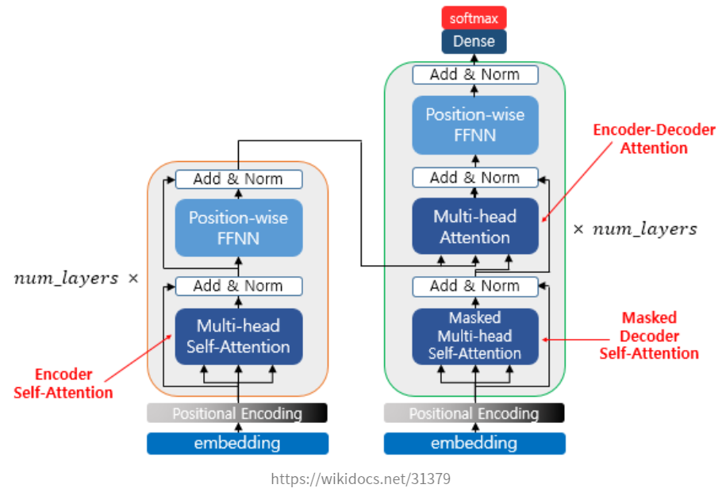
Fig. 4 The structure of selfattention procedure
To intuitively understand the self-attention of the encoder, it means that the similarity between words in the input sentence is obtained.
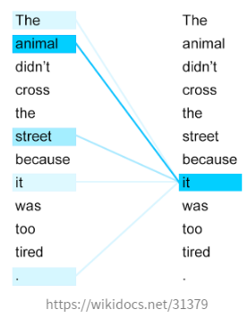
Fig. 5 Self-attention mechanism showing the similarity between words
Get Q, K, V vectors As described above, the self-attention operates based on the word vector of the input sentence. However, in practice, in order to perform the self-attention, a process of obtaining the Q-vector, the K-vector, and the V-vector from the word vectors which are the initial inputs of the encoder is required. In this case, the Q-vector, the K-vector, and the V-vector have a lower dimension, unlike the dimension of the initial input, and in transformer, each 512-dimensional word vector is converted into a 64-dimensional Q-vector, the K-vector, and the V-vector from the initial input.
The above value of 64 is determined by another hyperparameter of transformer, num_heads. In transformer, the value of num_heads is set to 8, and thus it is necessary to convert the value into a Q vector, K vector, and V vector in 512/8=64 dimensions.
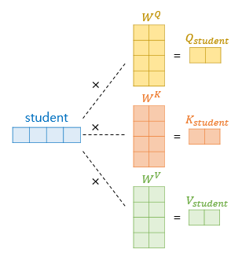
Fig. 6 The process of converting a 512-dimensional embedding vector into Q, K, and V vectors
For example, the 512-dimensional embedding vector of the word “student” is multiplied by a Q weight, K weight, and V weight matrix with 512 X 64 dimensions, respectively, to obtain Q, K, and V vectors. If Q, K, and V vectors are obtained, it is the same as the existing attention mechanism from now on. Each Q vector obtains an attention score for all K vectors, obtains an attention distribution, and then uses it to weight the V vector to obtain an attention value or a context vector. And this is repeated for all Q vectors.
Introduction #
This paper addresses these challenges by introducing models that use cross-attention, inspired by the encoder-decoder architecture, to condition generation on reference text without a prompt. The approach leverages pre-trained decoder-only models and trains only a small number of added layers. The authors use Question-Answering (QA) as a testbed to evaluate these models’ ability to perform conditional generation.
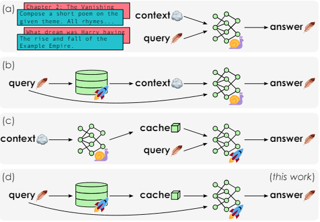
Fig. 6 Faster inference in context-conditional language modeling
These four approaches highlight various strategies for efficient context processing in large language models.
(a) depicts a scenario where a user’s query must be interpreted within a given context to generate an answer. In this case, the query and answer are small (light), but the context is large (heavy). This results in a time complexity of O(|context|²) for the LLM.
(b) explains In-Context Learning (ICL) and Retrieval-Augmented Generation (RAG) which use the query to look up the context from a finite corpus, but still remain inefficient with large contexts.
(c) can be preprocessed into a cache, enabling fast inference on a given query. This approach has a time complexity of O(|context|(|query| + |answer|)).
(d) is the method that the author proposed named XC-CACHE. It is implemented in two ways that leverage pre-trained decoder-only models and add a separate encoder to process the context: one approach uses the frozen decoder as an encoder (called XC-LLAMA), and the other uses a small bidirectional encoder (called XC-LLAMAENC).
Methods #
Caching Representations and XC-CACHING #
Cache is typically a form of memory that allows for fast access, storing data that is frequently used or needed repeatedly. The main purpose of a cache is to improve processing speed and enhance the overall efficiency of the system. There are three types of elements called ‘key’, ‘value’, ‘query’ which can approaches to Caching.
KV(Key-Value) Caching is to store the (past) key and value states generated while processing context. As an example, for LLAMA 2-7B using 16 bits precision shows that the smaller per-token cache teh sizes are more desirable. JIT(Just-In-Time Key-Value Caching)-KV Caching is an alternative approach involves storing the (past) hidden states of the model in the cache. At inference time, once these hidden states are loaded on GPU, we can recover the full keys and values in O(|context|). These two KV and JIT-KV Caching model both entail two types of costs while yielding identical results: the size of the cache and the operations required during inference. So XC-Caching is presented as an effective way to improve inference speed while significantly reducing memory usage.
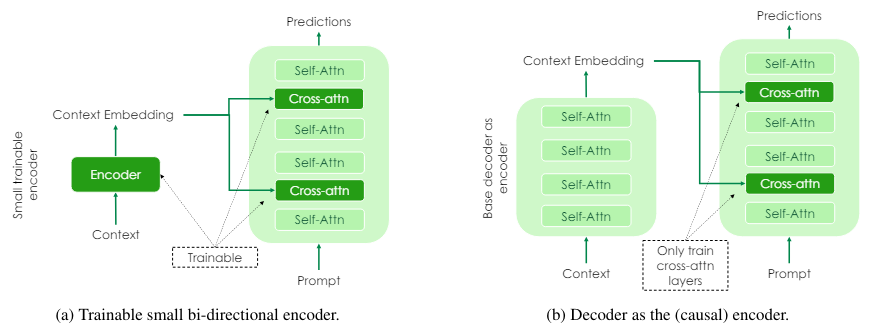
Fig. 7 XC-LLAMA’s architectures. A decoder-only model implements encoder-decoder architectures
Finetuning out in a parameter-efficient fashion via training only a small number of cross-attention layers. (a) The architecture uses a small bidirectional encoder and multiple self-attention and cross-attention layers to process the context and prompt. (b) The architecture uses only a decoder, mainly training the cross-attention layers to process the context and prompt.
Low memory usage, High precision XC-CACHING #
QA is ideal for testing the methods as it requires efficient external information retrieval and incorporation during generation. They focus on training for question-answering using datasets with context, query, and answer triplets. They build a training dataset by standardizing and combining the training partitions of five publicly available and diverse datasets: NATURAL QUESTIONS (NQ), HOTPOTQA, TOPIOCQA, MS MARCO, and SQUAD-V2. Each example in the resulting dataset contains a query (natural-language question), an answer (expected output), and one or more contexts (e.g., knowledge base articles), with at least one context containing the answer, referred to as the reference context.
In addition to training on the primary QA tasks, they optimize their models on context repetition tasks, named multitask training strategy. They use the pre-trained LLAMA 2 to create variations of XC-LLAMA. For XC-LLAMAENC, a version with a dedicated encoder, they fine-tune the LONGFORMER, increasing its input length to 6,000 tokens. They add one cross-attention layer every few self-attention layers, specifically using a 5-6 configuration. Training is done with the ADAMW optimizer, a batch size of 256, for 40,000 steps (4 epochs), with a linear learning rate scheduler.
They compare their models to ICL methods for generating context-based answers, noting that the contexts often have a low signal-to-noise ratio. They use metrics like F1 SCORE, RECALL, METEOR, and ROUGEL, with a focus on F1 and also evaluate BERTSCORE between predictions and ground-truth answers.
Results #
Compare with other methods #
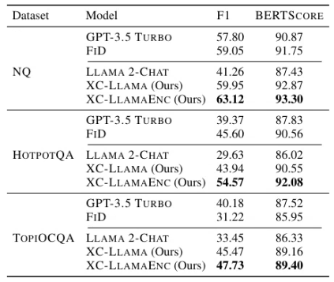
Table 1. QA performance on three diverse information-seeking tasks
They compare their method to existing conditional generation approaches. The main baseline is ICL, using context as part of the prompt, with results for LLAMA 2-CHAT and GPT-3.5-TURBO. FiD, a state-of-the-art T5-based QA model, is also included for comparison.
Results (Table 1) show that cross-attending to contexts (XC-LLAMA or XC-LLAMAENC) significantly improves performance compared to prompting (LLAMA 2-CHAT). This approach is more broadly applicable and practical as it avoids the high variance induced by prompting. Even when using the decoder as an encoder, cross-attention to contexts outperforms ICL, suggesting that trained cross-attention layers compensate for sub-optimal encoder representations.
Expanded Evaluation of Context Conditioning Methods #
The previous section’s results show that adding and fine-tuning dedicated parameters for context-conditioning improves performance over prompting. Based on this, they expand their evaluation to consider alternative approaches using a small number of additional parameters for conditioning generation on reference contexts. They focus on both prediction performance and computational efficiency, assessing how well different models can pre-process and cache context representations.
They fine-tune LORA adapters applied to the same LLAMA 2 decoder used for XC-LLAMA. This fine-tuning significantly improves QA accuracy over ICL baselines but requires storing all KV states throughout every layer, leading to high costs. In contrast, encoder models only need to cache the hidden states of their last layer, reducing space requirements.
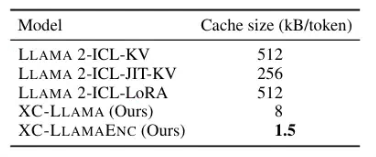
Table 2. Cache memory footprint per context token
As shown in Table 2, XC-LLAMA variants greatly reduce the caching footprint by storing only the last hidden states of the encoder. XC-LLAMAENC further reduces space requirements due to the lower dimensional representation of LONGFORMER compared to LLAMA 2. This reduction in cache size is practically significant, especially for large datasets like Wikipedia, as it decreases memory usage and communication costs, enabling longer generation or larger batch sizes during inference.
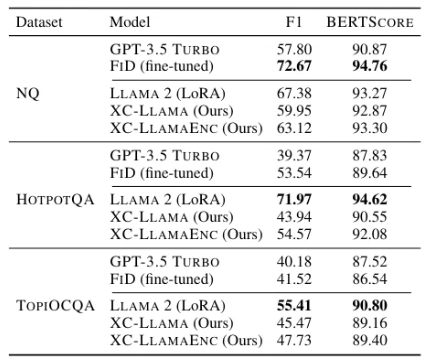
Table 3. QA performance
The Pareto set includes ICL models fine-tuned with LORA, which have higher BERTSCORE but require substantial caching space, and encoder models, which slightly sacrifice prediction accuracy but significantly reduce memory footprint. Detailed QA results in Table 3 include the GPT-3.5 TURBO ICL baseline and FiD, fine-tuned on our training dataset. FiD is included for performance reference but is not directly comparable as it does not support caching pre-processed contexts. Their models achieve significant space savings with only a slight reduction in prediction accuracy, advantageous in various practical scenarios.
Conclusion #
They introduced XC-LLAMA, a method to convert a pre-trained decoder-only language model into an encoder-decoder architecture that can generate outputs based on both encoder inputs and decoder queries. This is done by adding cross-attention layers between the self-attention layers of the pre-trained decoder. Two methods for defining the encoder are discussed: using a copy of the decoder or introducing a small, trainable bi-directional encoder. This architecture reduces caching space by over 300 times. In QA settings, XC-LLAMA shows higher prediction accuracy compared to standard In-Context Learning (ICL) methods with LLAMA 2 or GPT-3.5 TURBO. It also achieves accuracy levels nearly on par with caching-intensive fine-tuned prompted models, offering a more practical, caching-efficient alternative.
Related works #
Decoders as encoders #
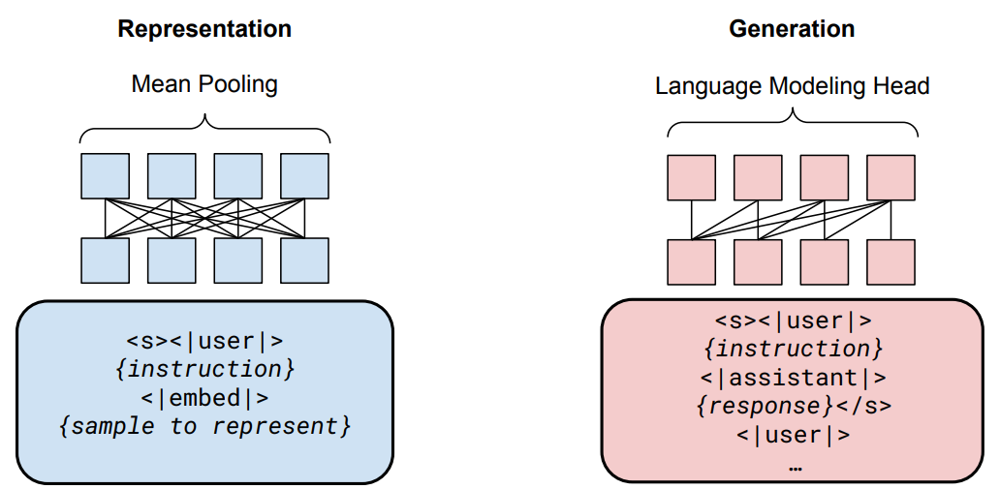
Fig 8. GRITLM architecture and format
GRIT converts a pretrained causal decoder into a bi-directional encoder,yielding sentence-level embeddings while maintaining its ability to perform autoregressive generation of text. However, unlike the models they consider, this conversion requires fine-tuning all model parameters instead of additional ones. Parameterefficient approaches to turn decoders into encoders were also proposed.
Discussion: Future Research Directions #
Problems and Concerns #
- Fake News and Misinformation Large language models (LLMs) like GPT-3.5 and LLAMA have shown an ability to generate text that is almost indistinguishable from human-written content. This can be misused to create fake news or misinformation, posing a significant challenge. Research should focus on developing mechanisms to detect and mitigate the spread of misinformation. One potential direction is to enhance the model’s ability to verify information against trusted sources before generating responses
- Evaluate different datasets and tasks While QA tasks are an important area in NLP, there are many other tasks in this field. For example, text classification(IMDb), sentiment analysis(Sentiment140,SST-2), machine translation(WMT), and information(MS MARCO) retrieval are all diverse tasks within NLP. Each task has unique characteristics and requirements, so evaluating the efficiency of XC-CACHE across various tasks is essential.
Future Directions #
- Improving Caching Techniques The XC-CACHE method has demonstrated significant efficiency gains. Further refinement of caching techniques could lead to even greater reductions in memory usage and computational cost. Exploring alternative caching strategies and optimizing cross-attention mechanisms may yield more efficient models without compromising performance.
- Context-Aware Models Developing models that can dynamically adjust their context based on the specific query could improve accuracy and relevance. Future work could focus on adaptive models that utilize context more intelligently, potentially incorporating real-time data retrieval and updating caches accordingly.